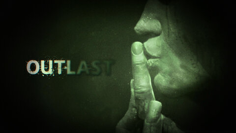

Games
Hollow Knight
Ratings: Overwhelmingly Positive!
Reviews: Overwhelmingly Positive!
Consensus: While challenging players, this game delivers with a unique art style and beautiful sound track, mystifying players, explorers, and killers alike as they venture through the durges of Hollow Knight. Considered a "Souls-like" of sorts, this game offers an awesome experience and rewards creativity as you diversify how you play as well as your build. Overall, this game is absolutely fantastic, with interesting mechanics, user friendly controls, and more.

Cuphead
Ratings: Overwhelmingly Positive!
Reviews: Overwhelmingly Positive!
Consensus: Be it the nostalgic, rubber hose animation style or the flowy old-timey designs and symbolism from the roaring 20s, Cuphead is a diffulct yet fair game that has won the hearts of many with its unique charm. From a "glorious" experience to the challenges within, Cuphead makes you feel like you earned everything you fight for, be it the upgrades you get or the bosses you beat. Overall, it's an amazing game, even if you're the one who ends up "Whalloped!" in the end.

Cult of the Lamb
Ratings: Overwhelmingly Positive!
Reviews: Overwhelmingly Positive!
Consensus: This is a super immersive game that somehow has created the perfect cross between a happy-go-lucky, bouncy art style and the eldritch horrors that can be found in the vestiges of the realm of the old faith. Considered one of the most enjoyable games as of late, Cult of the Lamb has been an amazing simulator where you can fight your way through your enemies, go on various quests while exploring, or spend your time taking care of your cult, followers, and the like. All in all, this game is brilliant, and deserves all the praise it gets and more.

Mario Kart 8
Ratings: Overwhelmingly Positive!
Reviews: Overwhelmingly Positive!
Consensus: Chaotic and as frustrating as it is, Mario Kart 8 is pretty much considered a household game due to how intoxicatingly addictive it is! Whether you need to itch that competitive spirit deep inside you with intense races and high stakes, or to casually make your way through diverse, colorful, and fun maps to pass the time, this game has it! At least, it stands now as one of the must fun, replayable games, with plent of options and variety that makes it something simply incredible. Overall, Mario Kart 8 is an awesome game, whether you're playing solo or with friends and family.

Dark Souls III
Ratings: Very Positive
Reviews: Very Positive
Consensus: Offering a difficult yet amazing experience from the intricately designed bosses, gorgeous / breath-taking atmosphere, and jarring level design to various NPCs and the story within, Dark Souls III is a great game. However, it doesn't exactly take the title of "creme de la creme" since it falters at some point, with some of the story being guarded by DLC and it feeling like the 1st 2 games of the trilogy weren't addressed. Despite this, the game can be brutal, but definitely isn't impossible where players can enjoy an unforgettable experience that'll evoke many emotions for sure.
Outlast
Ratings: Overwhelmingly Positive!
Reviews: Overwhelmingly Positive!
Consensus: Keeping players on edge, this first-person survival horror delivers a terrifying experience, with scares lurking around every corner as much as the story behind the abandoned psychiatric hospital it all takes place in. With questionable pacing and terror struck into the hearts of players, this game has become notorious among horror games with exceptional atmosphere and world building, relentless tension and suspense, and psychological horror elements that haunt those who make their way through the halls of Outlast. While it isn't very replayable, this game is an amazing, immersive experience for those willing to take it on.